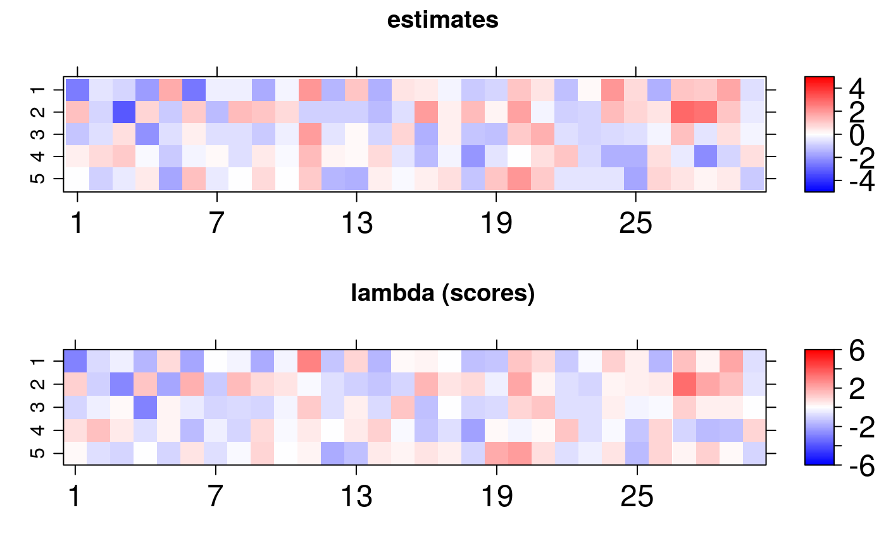

vignettes/bsem.Rmd
bsem.RmdThis vignette introduces the bsem package routines. This package was designed to allow particular cases of structural equation models (SEMs) in R. Examples include confirmatory factor analysis (CFA) and confirmatory SEM. The flexible full SEM model (outer model + inner model), implemented here, enables the evaluation of user-defined constructs (latent variables) along with the analysis of established relationships among the latent scores (factors depending on other factors) or exogenous variables (variables depending on factors).
Factor analysis (FA) is a powerful and flexible tool to investigate the multivariate dependence in a data set. The main aim is to reduce dimension, i.e., summarize the information expressed in multiple observed variables. The summarization process involves the construction of a few unobserved latent factors representing the existing subjacent patterns in the data. The usual FA can be divided into two types: exploratory (EFA) and confirmatory (CFA). The EFA does not impose any restriction on the relationship between latent factors and observed variables (the model is free to establish such associations). The CFA accounts for the technical information regarding the connections between observed and latent variables; examples of applications involving the CFA can be found in Brown (2015). In this case, the researcher must impose that a factor is exclusively explained by a group of observed variables. The CFA is widely used in the context of SEM, see the references Lee and Song (2003), Skrondal and Rabe-Hesketh (2004), Palomo, Dunson, and Bollen (2007), Hoyle (2014) and Keith(2019). Besides the EFA and CFA, it is possible to work with an intermediate case combining these two types. This option can be seen as a semi-confirmatory FA and an example is described in Mayrink and Lucas (2013) and Mayrink and Lucas (2015).
The structure of an SEM has two parts, one involving a CFA and another with multiple regression equations. For an overview of SEMs, it is recommended to read the work Sanchez et al. (2005), which is focused on applications in epidemiology. The studies Anderson and Gerbing (1988) and MacCallum and Austin (2000) provide an overview of the use of SEM in psychology. Examples using SEMs in the context of Bayesian inference are discussed in Palomo, Dunson, and Bollen (2007). A clear advantage of using the Bayesian approach is the fact that asymptotic assumptions, required by frequentist maximum likelihood methods, may not be valid depending on the sample size. The reference Lee and Song (2003) highlights the good performance of the Bayesian SEM in a comparison with the frequentist version.
Consider:
the outter model (blocks) as: \[\boldsymbol{X_{p\times n}} = \boldsymbol{\alpha}_{p\times k}\boldsymbol{\lambda}_{k\times n} +\boldsymbol{\varepsilon}_{p\times n}\] where \(\boldsymbol{X}\) is the data matrix with variables in the rows and sample elements in the columns, \(\boldsymbol{\alpha}_{p\times j}\) is the column vector of loadings for the \(j^{th}\) latent variable and \(\boldsymbol{\lambda}_{j\times n}\) is the row vector of scores for the \(j^{th}\) unobserved variable,\(~j =1,\dots,k\). Normality is assumed for the errors as \(\boldsymbol{\varepsilon}_{ij}\sim N(0, \sigma_{i}^2)\) for \(i = 1,\dots, p\).
paths: \[\boldsymbol{\lambda}_{j\times n} = \boldsymbol{\beta}^{\top} {\lambda^{(-j)}} + \nu~\] where \(\boldsymbol{\beta}\) is a column vector of constant coefficients, \({\lambda^{(-j)}}_{ (k-1)\times n}\) is the matrix of scores excluding the \(j^{th}\) row scores and the error assumes \(\nu_j \sim N(0,1)\).
exogenous: \[\boldsymbol{Y}_{l\times n} = \boldsymbol{\gamma_0} + \boldsymbol{\gamma}^{\top} {\lambda} + \xi~\] where \(\boldsymbol{\gamma}\) is a column vector of constant coefficients and \(\boldsymbol{\gamma_0}\) is the intercept. \(\lambda_{k \times n}\) is the matrix of scores and the error assumes \(\xi_l\sim N(0,\tau_l^2)\).
The guidelines in this document were divided into 4 sections: installation, description, usage, and remarks.
The bsem package imports Stan software specific routines to support internal calculations. The rstan package interface enables the use of the NUTS algorithm ( Hoffman and Gelman, 2014) to explore the posterior distribution efficiently in R. The development version of bsem can be found in github.com/rvpanaro/bsem.
For github version:
library("devtools") devtools::install_github("rvpanaro/bsem")
For CRAN version:
library("devtools") install.packages("bsem")
During the installation, other dependencies might be required, such as magrittr, lattice, viridis, coda, DiagrammeR, visNetwork and, obviously, rstan and its dependencies. Other packages are also suggested such as ggplot2, bayesplot and tidybayes. The default arguments used to build the bsem::sem routine will be introduced in the next sections, this is the main function of the package, as it allows the Bayesian analysis for SEM and its particular cases.
The data and additional commands are passed through the bsem::sem function:
data: a mandatory ‘matrix’ object where the columns are variables and the rows are observationsblocks: a mandatory named list of colnames (or integers in 1:ncol(data)) indicating the manifest variables corresponding to each block; generic names are assumed for latent variables internally if not definedpaths: list referring to the inner model paths; a list of characters or integers referring to the score’s relationship; the jth first latent variable is explained if names(paths) is NULLexogenous:signals: ist referring to the signals of the factor loadings initial values; must be true: (length(signals) == length(blocks)) && (lengths(signals) == lengths(blocks))row_names: optional identifier for the observations (observation = row);prior_specs: prior settings for the Bayesian approach; only ‘normal’ and ‘cauchy’ for gamma0, gamma and beta; ‘gamma’, ‘lognormal’ and ‘inv_gamma’ for sigma2 and tau2 are available, those prior specifications are ignored if not needed (FA or SEM)cores: number of core threads to be usedpars: allows parameters to omitted in the outcome; options are any subset of default c(“alpha”, “lambda”, “sigma2”)iter: number of iterationschains: number of chainsscaled: logical; indicates whether to center and scale the data; default FALSE...: further arguments passed to Stan such as warmup, adapt_delta, and others, see rstan::sampling.sem( data, blocks, paths, exogenous, signals, row_names = rownames(data), prior_specs = list( beta = c("normal(0,1)"), sigma2 = c("inv_gamma(2.1, 1.1)"), gamma0 = c("normal(0,1)"), gamma = c("normal(0,1)"), tau2 = c("inv_gamma(2.1, 1.1)") ), cores = parallel::detectCores(), pars = c("alpha", "lambda", "sigma2"), iter = 2000, chains = 4, scaled = FALSE, ... )
The above function automatically selects the appropriate routine according to the specified arguments, examples are given in the next section. One can reproduce the examples below by copying and pasting the following code to the R console. For these examples, simulated artificial data was created so that we can verify that the estimates are close enough to the true parameter values used to generate the data.
We will use simulated data from so far considered full model which consists of the outer model and the two parts inner model (latent variable regression and exogenous variable regression) described in the introduction. In many applications, with the help of technical knowledge, it is possible to establish relationships between all variables in the data set and the latent variables (constructs) under study. This case characterizes the confirmatory factor analysis (CFA) in the outer part of the model. Besides that, we can also verify linear relationships between latent variables and/or exogenous and latent variables. The simdata vignette has details on how to simulate datasets considering the structures described.
## [1] "data" "real" "blocks" "signals" "paths" "exogenous"It is worth mentioning that the paths list is named with the block list names and the exogenous list with the data colnames. The idea behind these list structures is that each list object is a vector that describes which elements are correlated to some target. For example:
dt$exogenous
## $Y1
## [1] 1 2The latent scores F1 and F2 are the explanatory variables of the exogenous variable Y1. The paths list also represents a linear regression model, while the blocks list determines the CFA part of the model.
dt$blocks
## $F1
## [1] 1 2 3
##
## $F2
## [1] 4 5 6 7
##
## $F3
## [1] 8 9 10
##
## $F4
## [1] 11 12 13 14 15 16
##
## $F5
## [1] 17 18 19 20 21In this example, the first 3 variables in the dataset manifest the latent variable F1, we will refer to it as the first block.
colnames(dt$data)
## [1] "Y1" "X1" "X2" "X3" "X4" "X5" "X6" "X7" "X8" "X9" "X10" "X11"
## [13] "X12" "X13" "X14" "X15" "X16" "X17" "X18" "X19" "X20" "X21"Note that the manifest variables can not include exogenous variables in dt$data. Thus, the first block is expressed by X1, X2, and X3, as the variable Y is internally considered just for the inner part.
data, blocks, paths and exogenous arguments should specify the SEM model with exogenous variables:
fit <- bsem::sem( data = dt$data, blocks = dt$blocks, paths = dt$paths, exogenous = dt$exogenous, signals = dt$signals, chains = 1, iter = 2000 )
It is possible to obtain a visNetwork graph with:
plot(fit)
The ellipsoidal nodes represent the latent variables, the boxes represent the manifest variables, the dashed lines represent the linear relations between latent scores or between latent scores, and exogenous variables and the solid lines represent the relationship between the manifest and latent variables. Finally, the recursive solid lines refer to the error variance estimate of each manifest or exogenous variable.
Also, the scores and loadings used to generate the data can be visually compared to the estimates obtained using the lattice library routines imported in arrayplot function:
gridExtra::grid.arrange(bsem::arrayplot( fit$mean_lambda, main = "estimates", mini = -5, maxi = 5), bsem::arrayplot(dt$real$lambda, main = "lambda (scores)", mini = -6, maxi = 6), bsem::arrayplot(fit$mean_alpha, main = "estimates", mini = -6, maxi = 6), bsem::arrayplot(dt$real$alpha, main = "alpha (loadings)", mini = -6, maxi = 6), bsem::arrayplot(fit$mean_sigma2, main = "estimates", mini = -6, maxi = 6), bsem::arrayplot(dt$real$sigma2, main = "sigma2", mini = -6, maxi = 6), layout_matrix = matrix(c(1, 1, 3, 3, 5, 5, 2, 2, 4, 4, 6, 6), ncol = 2) )

For this vignette we fitted the model using just one chain, it is recommended up to 4 chains with 2000 iterations and 1000 warmup samples (standard) to reach the equilibrium distribution. Even so, we found that the estimates follow the pattern of the true values of the parameters:
The bsem::summary routine prints descriptive statistics to the R console:
summary(fit)
##
##
## ---
## bsem model: semEX
## latent variables (outter model): 5
## regressions (inner model): 2
##
##
## outter model loadings (alpha):
##
## F1
## mean 50% sd HPD.l HPD.u n_eff Rhat
## X1 1.7750 1.7456 0.2428 1.3194 2.2442 65 0.9995
## X2 -0.3397 -0.3306 0.1520 -0.6371 -0.0567 647 1.0027
## X3 2.0737 2.0409 0.2834 1.5414 2.6045 69 0.9993
##
## F2
## mean 50% sd HPD.l HPD.u n_eff Rhat
## X4 -0.6802 -0.6591 0.1939 -1.0722 -0.3202 281 1.004
## X5 1.8309 1.7844 0.2781 1.3299 2.3818 101 1.013
## X6 -1.5265 -1.4980 0.3149 -2.2045 -1.0129 193 1.007
## X7 1.0968 1.0704 0.1771 0.7588 1.4465 110 1.006
##
## F3
## mean 50% sd HPD.l HPD.u n_eff Rhat
## X8 1.230 1.198 0.3313 0.5831 1.899 215 1.002
## X9 -1.914 -1.867 0.3062 -2.5700 -1.409 93 1.008
## X10 -1.479 -1.443 0.2413 -1.9917 -1.063 91 1.006
##
## F4
## mean 50% sd HPD.l HPD.u n_eff Rhat
## X11 -0.9326 -0.9324 0.1417 -1.2300 -0.6884 99 1.010
## X12 0.2381 0.2343 0.2429 -0.2752 0.6929 895 1.001
## X13 -1.8437 -1.8339 0.2443 -2.2840 -1.3698 77 1.007
## X14 0.9979 0.9808 0.3755 0.2560 1.7379 655 1.000
## X15 -1.1280 -1.1174 0.1555 -1.4640 -0.8777 68 1.010
## X16 -1.4411 -1.4265 0.1943 -1.8046 -1.0840 77 1.008
##
## F5
## mean 50% sd HPD.l HPD.u n_eff Rhat
## X17 -1.9706 -1.9502 0.2649 -2.5090 -1.499 77 1.023
## X18 1.4609 1.4472 0.3639 0.8083 2.174 307 1.004
## X19 -1.9534 -1.9250 0.2618 -2.5099 -1.483 78 1.022
## X20 0.3321 0.3333 0.2232 -0.0745 0.786 1316 1.007
## X21 -1.7311 -1.7051 0.2336 -2.2423 -1.324 82 1.016
##
## ---
##
## idiosyncratic error variances (sigma2):
## mean 50% sd HPD.l HPD.u n_eff Rhat
## sigma2[1] 0.1287 0.1232 0.0376 0.0691 0.2058 755 1.0047
## sigma2[2] 0.9850 0.9481 0.2574 0.5644 1.4818 914 0.9992
## sigma2[3] 0.1416 0.1354 0.0428 0.0683 0.2237 678 1.0015
## sigma2[4] 1.3438 1.2838 0.3635 0.7924 2.1039 1202 0.9997
## sigma2[5] 0.1986 0.1847 0.0732 0.0859 0.3393 419 1.0103
## sigma2[6] 2.4231 2.3139 0.6455 1.3798 3.6914 1411 1.0000
## sigma2[7] 0.2153 0.2035 0.0698 0.1040 0.3598 744 1.0007
## sigma2[8] 2.3005 2.2065 0.6275 1.1838 3.4754 1467 1.0027
## sigma2[9] 0.1576 0.1486 0.0540 0.0735 0.2568 495 1.0013
## sigma2[10] 0.1496 0.1414 0.0450 0.0707 0.2371 606 1.0009
## sigma2[11] 0.1946 0.1867 0.0513 0.0986 0.2912 943 0.9992
## sigma2[12] 1.3695 1.3243 0.3625 0.7772 2.1039 1027 1.0055
## sigma2[13] 0.2231 0.2105 0.0737 0.0903 0.3567 573 1.0000
## sigma2[14] 2.9496 2.8073 0.8423 1.6351 4.7121 1201 1.0006
## sigma2[15] 0.1333 0.1256 0.0392 0.0698 0.2090 969 1.0031
## sigma2[16] 0.1093 0.1044 0.0314 0.0552 0.1707 1142 1.0014
## sigma2[17] 0.1061 0.1003 0.0314 0.0596 0.1650 733 0.9992
## sigma2[18] 2.4076 2.3061 0.6066 1.3116 3.5774 1401 0.9997
## sigma2[19] 0.1056 0.1015 0.0291 0.0566 0.1630 919 0.9995
## sigma2[20] 1.1012 1.0500 0.2795 0.6527 1.6274 1147 0.9995
## sigma2[21] 0.1060 0.1016 0.0303 0.0566 0.1687 921 1.0009
##
## ---
##
## inner model regression coefficients (beta):
##
## F1
## mean 50% sd HPD.l HPD.u n_eff Rhat
## F3 0.8995 0.8826 0.2669 0.3976 1.4068 185 1.001
## F4 -0.7300 -0.7236 0.2533 -1.2868 -0.2657 227 1.004
##
## F2
## mean 50% sd HPD.l HPD.u n_eff Rhat
## F4 -1.0169 -1.0050 0.2751 -1.5694 -0.509 297 1.000
## F5 0.7141 0.6997 0.2389 0.2886 1.184 359 1.011
##
## ---
##
## exogenous regression coefficients (gamma0, gamma, tau2):
##
## Y1
## mean 50% sd HPD.l HPD.u n_eff Rhat
## intercept 1.5044 1.5035 0.1454 1.2362 1.8097 1197 1.001
## F1 0.6006 0.5881 0.1341 0.3561 0.8795 207 1.001
## F2 -1.1209 -1.0928 0.1936 -1.5236 -0.7987 133 1.008
## tau2[1] 0.5058 0.4809 0.1407 0.2509 0.7800 933 1.003
##
##
##
## Head Rhat:
## lambda[5,5] alpha[17,5] alpha[19,5] lambda[5,19] lambda[5,20] lambda[5,25]
## 1.033 1.023 1.023 1.021 1.020 1.019
##
## Tail Rhat:
## lambda[1,13] lambda[2,17] lambda[1,30] alpha[4,4] lambda[3,28] lambda[3,3]
## 0.9991 0.9990 0.9990 0.9990 0.9990 0.9990
##
## median PVTE: 90.52
## AFR2: 27.43%
##
## ---The effective sample size n_eff gives an estimate of the independent draws from the posterior distribution, and Rhat referred to as the potential scale reduction statistic, is one of the useful ways to monitor whether a chain has converged to the equilibrium distribution. This statistic measures the ratio between the average variation of the samples within each chain and the variation of the combined samples in the chains; if the chains have not converged to a common region, this statistic will be greater than one. Along with the estimates and posterior descriptives, the summary also provides quantities for the diagnosis of the quality of fit of the factorial model: the percentage of the total variability (of variables in X) explained by factors (PVTE) and the \(R^2\) statistics adapted for factor analysis (AFR2).
A crucial difference in obtaining the same statistics printed by the bsem::summary function is the use of the signals. The signal specification, (-1 or 1) for each of the factor loadings, forces the initial values of each chain to have the same direction, and, naturally, these chains converge to nearby regions. Otherwise, the loadings signals between chains is often opposite as a consequence of random initialization. In order to circumvent this issue, the package automatically transforms posterior chains using simple for loops and if statements to recalculate the descriptives using rstan::monitor.
This page was dedicated to illustrating the commands and outcomes of the proposed package. The closing remarks section highlights the most important aspects regarding user-defined modeling.
The content of this vignette introduces the bsem package. The current version is ready for the main statistical study in the field of latent variable analysis.
It is noteworthy that the results obtained with this package vary according to the initial values set for sampling with NUTS. In this sense, we provided user-defined initial values for reproducibility. In addition, the amount of chains, iterations and burn-in usually can have a great influence on the analysis. Moreover, NUTS includes tuning parameters that can control the sampler’s behavior, see documentation. From our experience, using just one chain with more iterations can be helpful and convenient depending on the number of parameters adopted in the model specification. Also, highlight to the fact that the implemented routines do not support nonlinear or multilevel regression models for paths or exogenous variables.
This document is part of the content submitted to CRAN. The package is also in public use and is available at the GitHub development platform, the link is https://github.com/rvpanaro/bsem.
Exploring bsem class vignette is also available as supplementary material.